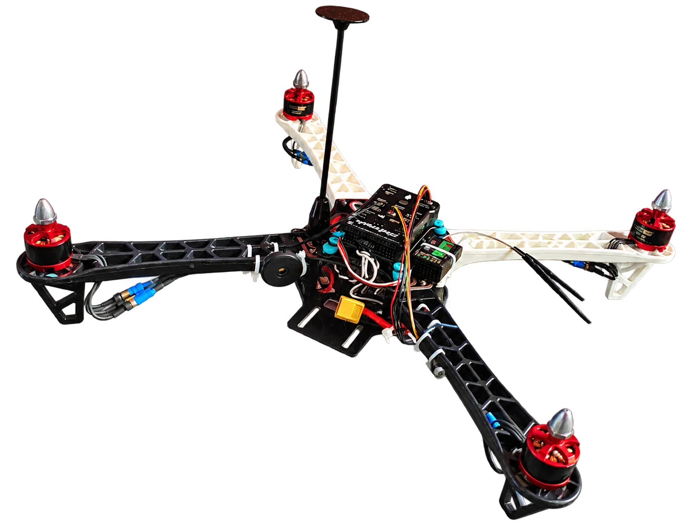

An educational quadcopter for hands-on learning
Explore how the airframe, electronics and flight controller work together. The configuration below is proposed and is confirmed before purchase.

Start with your learning goals.
YANA’s initial product is one educational quadcopter for colleges, robotics clubs, makerspaces and students. A custom quote defines the actual hardware and what accompanies it.
The current proposal uses an F450 frame and Pixhawk 2.4.8 controller. A product name or photograph alone does not establish component ratings, software support or included equipment.
Proposed configuration and technical details
Scroll the table to see all columns.
| Item | Current information | What will be confirmed |
|---|---|---|
| Airframe | F450 | Proposed configuration |
| Flight controller | Pixhawk 2.4.8 | Proposed; exact board revision and firmware compatibility to be verified |
| Motor model and KV rating | Subject to confirmation | Confirmed in the itemised quote |
| ESC model, rating and protocol | Subject to confirmation | Matched to the agreed motors and power system |
| Propeller diameter, pitch and material | Subject to confirmation | Matched to the final configuration |
| Battery voltage, capacity and connector | Subject to confirmation | Battery inclusion is not assumed |
| Charger and charging accessories | Subject to confirmation | Inclusions and requirements stated in the quote |
| Radio transmitter and receiver | Subject to confirmation | Model, inclusion and compatibility agreed before purchase |
| GPS, compass and telemetry equipment | Subject to confirmation | Equipment visible in prototype photos is not a package guarantee |
| Dimensions and all-up weight | Subject to confirmation | Measured for the final assembly |
| Flight time, range and payload | Not published | Requires verified testing of the final configuration |
| Assembly state and included accessories | Subject to confirmation | An itemised list is supplied with the quote |
| Documentation, training and support | Subject to confirmation | Scope agreed with your institution |
| Price, delivery and service terms | Custom quote | No fixed price or delivery commitment is published |
Prototype photographs show an educational assembly, including exposed electronics. The video shows the hardware on a workbench. Neither is evidence of flight performance or a final package list.
What can students explore?
Connect components with concepts
Identify the structural frame, trace the difference between power and signal paths, and discuss the role of a flight controller. Build a vocabulary for asking better engineering questions.
Plan the learning activity
Discuss supervised practical work, simulation and suitable development exercises. Learning support, workshop equipment and instructor time are separate items to agree in your proposal.
Questions to settle before ordering
Is this a ready-to-fly package?
The assembly state and any equipment needed to operate the quadcopter are subject to confirmation. Ask for a complete inclusion and exclusion list.
Which firmware will the controller run?
The exact Pixhawk board, memory limits, firmware version and supported features must be checked on the actual hardware. A generic Pixhawk specification is not a guarantee for a particular board.
Can you provide flight time or range?
No flight time, operating range, payload or other performance number is currently published. These require verified testing of the agreed configuration.
Can we combine the drone with a workshop?
Yes, you can request a combined proposal. The facilitator, equipment, activities, training support and any demonstration must be agreed in writing.
Tell us what you need.
Include your institution, location, intended use, quantity, preferred timeline and any documentation or training requirements. We’ll use these to discuss a suitable configuration.
Request a Quote Read the buying and learning guides ↗